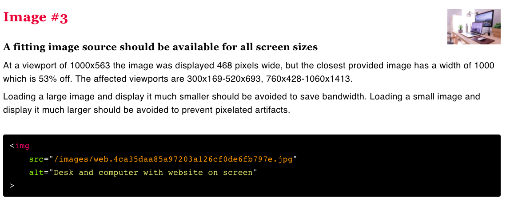

<!doctype html>
<html lang="en">
    <head>
        <meta charset="utf-8">
        <meta name="viewport" content="width=device-width, initial-scale=1.0, maximum-scale=1.0, user-scalable=no">

        <title>reveal-md</title>
        <link rel="stylesheet" href="./css/reveal.css">
        <link rel="stylesheet" href="./style.css" id="theme">
        <link rel="stylesheet" href="./css/highlight/zenburn.css">
        <link rel="stylesheet" href="./css/print/paper.css" type="text/css" media="print">


    </head>
    <body>

        <div class="reveal">
            <div class="slides"><section ><section data-markdown><script type="text/template">

<!-- .slide: data-background="./images/hero_bg.jpg" -->
<h1 class="title dark-background"><span class="translucent">Responsive</span><br />Images</h1>
<h2 class="subtitle">Sia Karamalegos</h2>

</script></section><section data-markdown><script type="text/template">

# Hi, I'm Sia


</script></section><section data-markdown><script type="text/template">

<!-- .slide: data-background="./images/elevator2.jpg" -->
<h1 class="dark-background">
  <span class="highlighter">Why should I care about image responsiveness?</span>
</h1>
</script></section></section><section  data-markdown><script type="text/template">
As of September 2018, images account for 39-43% of the bytes on average needed to load a webpage.

<small>[httparchive.org](https://www.httparchive.org)</small>
</script></section><section  data-markdown><script type="text/template">
> Rebuilding Pinterest pages for performance resulted in a 40% decrease in wait time, a 15% increase in SEO traffic and a 15% increase in conversion rate to signup.

<small>[wpostats.com](https://wpostats.com/)</small>
</script></section><section  data-markdown><script type="text/template">
> AliExpress reduced load time by 36% and saw a 10.5% increase in orders and a 27% increase in conversion for new customers.

<small>[wpostats.com](https://wpostats.com/)</small>
</script></section><section ><section data-markdown><script type="text/template">
> Speed is now used as a ranking factor for mobile searches.

<small>https://developers.google.com/web/updates/2018/07/search-ads-speed</small>

<aside class="notes"><p>In 2016, Doubleclick by Google released a report saying that 53% of mobile sites are abandoned if pages take longer than 3 seconds to load.</p>
</aside></script></section><section data-markdown><script type="text/template">

# What problems are we trying to solve?
</script></section></section><section  data-markdown><script type="text/template">
## Is this responsive?

```css
img {
  max-width: 100%;
}
```

<aside class="notes"><p>This is not responsive. It&#39;s flexible, but not responsive. What are some other ways you&#39;ve tried to use responsive images? hide/show blocks based on viewport.</p>
</aside></script></section><section  data-markdown><script type="text/template">
# Goals
</script></section><section  data-markdown><script type="text/template">
<section>
  <h2>Users shouldn't download unnecessary bytes.</h2>
  <ul>
	  <li class="fragment fade-in-then-semi-out">Use the best file type.</li>
	  <li class="fragment fade-in-then-semi-out">Download the minimum image size to look good.</li>
  </ul>
</section>

<aside class="notes"><p>We have 2 major goals when it comes to image responsiveness. This is one.</p>
</aside></script></section><section  data-markdown><script type="text/template">
<section>
  <h2>We want our images to look good.</h2>
  <ul>
	  <li class="fragment fade-in-then-semi-out">Download the right size and resolution image.</li>
	  <li class="fragment fade-in-then-semi-out">Use art direction based on size-on-screen.</li>
  </ul>
</section>

<aside class="notes"><p>Our second goal is...</p>
</aside></script></section><section  data-markdown><script type="text/template">
<section>
  <h1>Image Responsiveness Toolbox</h1>
  <ul>
	  <li class="fragment fade-in-then-semi-out">Best file format</li>
	  <li class="fragment fade-in-then-semi-out">Right size and resolution</li>
	  <li class="fragment fade-in-then-semi-out">Art direction</li>
  </ul>
</section>

<aside class="notes"><p>These are the 3 main topics I&#39;m going to talk about today.</p>
</aside></script></section><section  data-markdown><script type="text/template">
# 💾  File Format  💾
</script></section><section  data-markdown><script type="text/template">
> Choosing the right image format... can be far more important than any flashy new “responsive image” technique.

<small>Mat Marquis, [Image Performance](https://abookapart.com/products/image-performance)</small>

<aside class="notes"><p>Responsive Issues Community Group (RICG) chair. Getting the right image format is more important than any responsive image technique.</p>
</aside></script></section><section  data-markdown><script type="text/template">
## Raster vs Vector


<small>https://commons.wikimedia.org/wiki/File:Bitmap_VS_SVG.svg</small>

<aside class="notes"><p>Raster images contain a set of data about a 2D grid of pixels. Vectors are a system of coordinates and &quot;vectors&quot; than can be redrawn at any size. Rasters are good for photo-realism. Raster file formats are really just different compression methods.</p>
</aside></script></section><section  data-markdown><script type="text/template">
## File Format Options

- `svg` (vector)
- `gif`
- `png`
- `jpg`

<aside class="notes"><p>Raster file formats are really just different compression methods. Not listed is video which is definitely an option but mostly out of scope.</p>
</aside></script></section><section  data-markdown><script type="text/template">
## `svg`

- Vector format but don't need Illustrator (XML!)
- Good for limited colors and sharp lines
- Examples: interface elements (icons) or not-too-complex logos
- Can style and animate with CSS or make basic edits in XML
</script></section><section  data-markdown><script type="text/template">
<svg version="1.1"
     baseProfile="full"
     width="300" height="200"
     xmlns="http://www.w3.org/2000/svg">

  <rect width="100%" height="100%" fill="red" />
  <circle cx="150" cy="100" r="80" fill="green" />
  <text x="150" y="125" font-size="60" text-anchor="middle" fill="white">SVG</text>
</svg>

```xml
<svg version="1.1"
     baseProfile="full"
     width="300" height="200"
     xmlns="http://www.w3.org/2000/svg">

  <rect width="100%" height="100%" fill="red" />
  <circle cx="150" cy="100" r="80" fill="green" />
  <text x="150" y="125" font-size="60"
        text-anchor="middle" fill="white">SVG</text>
</svg>
```

<aside class="notes"><p>What does this look like? It&#39;s just markup (XML). So we can edit it in the markup without using expensive software like Illustrator.</p>
</aside></script></section><section  data-markdown><script type="text/template">
<section>
  <h1>`gif`</h1>
  <ul>
	  <li class="fragment fade-in-then-semi-out">Raster format</li>
	  <li class="fragment fade-in-then-semi-out">Kind of "averages" pixels using quantization.</li>
	  <li class="fragment fade-in-then-semi-out">"Good" for limited colors and hard edges, binary transparency, and animation</li>
	  <li class="fragment fade-in-then-semi-out">Animation comes with huge file sizes, slow rendering, and poor accessibility</li>
	  <li class="fragment fade-in-then-semi-out"><strong>Better to use `svg` or video in most cases</strong></li>
  </ul>
</section>
</script></section><section  data-markdown><script type="text/template">
## `gif`: fun but terrible


<small>&#8593; 2.4 mb but still has bad resolution</small>

<aside class="notes"><p>animated gifs are basically self-contained flip books of individual gif stills. can be fun but really bad for perf + a11y. Video can do captioning and audio description tracks</p>
</aside></script></section><section  data-markdown><script type="text/template">
<section>
  <h1>`png`</h1>
  <ul>
	  <li class="fragment fade-in-then-semi-out">Raster format</li>
	  <li class="fragment fade-in-then-semi-out"><strong>Types</strong>: grayscale, indexed color (png-8, 256 colors), truecolor (png-24, up to 16m colors)</li>
	  <li class="fragment fade-in-then-semi-out"><strong>Lossless compression</strong> - like using ZIP for a file but all the data is still saved</li>
	  <li class="fragment fade-in-then-semi-out">Supports semi-transparency</li>
	  <li class="fragment fade-in-then-semi-out"><strong>Too big unless you need a photo-realistic image with transparency</strong></li>
	  <li class="fragment fade-in-then-semi-out"><strong>For non-photo-realistic images, use svg or jpg instead</strong> (except when using as a fallback for svg)</li>
  </ul>
</section>
</script></section><section  data-markdown><script type="text/template">
<section>
  <h1>`jpg` or `jpeg`</h1>
  <ul>
	  <li class="fragment fade-in-then-semi-out">Raster format</li>
	  <li class="fragment fade-in-then-semi-out"><strong>Joint Photographic Experts Group</strong> came up with this standard in 1992.</li>
	  <li class="fragment fade-in-then-semi-out"><strong>Lossy compression</strong>, but much better algorithms for encoding and compression than `gif`</li>
	  <li class="fragment fade-in-then-semi-out">Encodes 8x8 blocks of pixels by their brightness and hue. Humans more sensitive to brightness so compression on color isn't noticed by the human eye as much.</li>
	  <li class="fragment fade-in-then-semi-out">Does not support transparency</li>
	  <li class="fragment fade-in-then-semi-out">Ideal level of compression can be a finesse game.</li>
  </ul>
</section>
</script></section><section  data-markdown><script type="text/template">
# Demo
</script></section><section  data-markdown><script type="text/template">
# 📺 Size &amp; Resolution 📺
</script></section><section  data-markdown><script type="text/template">
## `srcset`

- Defines a set of images and the natural size of each image
- Always include a **base src** attribute for older browsers.
- The browser chooses the best image to download based on assumed display width of `100vw` and the user's screen resolution.

**`srcset` files are candidates, not commands.**

```html

```

<aside class="notes"><p><code>srcset</code> is an attribute for <code>&lt;img&gt;</code>. Width is in pixels even though is says <code>w</code>. Format is filename, space, actual image width in pixels.</p>
</aside></script></section><section  data-markdown><script type="text/template">
# DEMO

<aside class="notes"><p>(1) Start at small screen width, reload, then drag across to see what happens. (2) Chrome will <strong>only</strong> load smallest file and then later adds bigger if needed. Always uses biggest in cache. (3) Different browsers do this differently. (4) What if our image slot isn&#39;t 100vw?</p>
</aside></script></section><section  data-markdown><script type="text/template">
## x-descriptors

- Alternatively, give resolution info instead of width for each file, if the width is the same for all screen sizes.
- Leave out the resolution for the base low-resolution version since 1x is implied.

```html

```

<aside class="notes"><p>I usually find this more confusing. Demo is on page if someone wants to see it.</p>
</aside></script></section><section  data-markdown><script type="text/template">
## `sizes`

- Defines a set of media conditions and sizes intended for display of the image
- Leave out the media condition for the final size in the list to be the default for no other matches.
- **Order matters! First match is used.**
- The browser chooses the best image to download based on the matching display width and the user's screen resolution.

```html

```

<aside class="notes"><p>Format is [media condition][space][display width]. Once again, these are candidates, not commands. We are letting the browser choose which file to use ultimately.</p>
</aside></script></section><section  data-markdown><script type="text/template">
# DEMO

<aside class="notes"><p>srcset and sizes - note cache problem</p>
</aside></script></section><section  data-markdown><script type="text/template">
## Demystifying Resolution

- **DPR (device pixel ratio)** = viewport CSS pixels/actual screen resolution
- **In layman's terms**: on a 2x screen, a displayed image width of 100px needs a 200px file/natural width image to look good.
- **Example**: If the viewport is 320px, the pixel ratio for the medium image would be 800/320 = 2.5x. Thus, the browser would choose the medium image for a Retina (2x) display:

```html

```

<aside class="notes"><p><code>srcset</code> can accept DPR instead of widths, though I find this more confusing.</p>
</aside></script></section><section  data-markdown><script type="text/template">
## Helpful Debugging Tools: DevTools

- Screen DPR: `window.devicePixelRatio`.
- Inspect `` then hover on filename to see displayed and natural sizes
- Which file is being used:
  - Inspect > Properties > `img` > `currentSrc`, or...
  - `performance.getEntriesByType('resource')` and pair with `.filter()`, then look for the resource `name`

```javascript
performance.getEntriesByType('resource').filter(resource =>
  resource.name.includes('pug')
)
```

<aside class="notes"><p>Demo this in long version</p>
</aside></script></section><section  data-markdown><script type="text/template">
## Helpful Performance Tools: RespImageLint

For performance, try out the [RespImageLint](https://ausi.github.io/respimagelint/) bookmarklet.



<aside class="notes"><p>Demo this in long version of talk</p>
</aside></script></section><section  data-markdown><script type="text/template">
# 🎨 Art Direction 🎨
</script></section><section  data-markdown><script type="text/template">
> **Design is the how**. It’s the foundation of all communication, the process and production of typography, color, scale and placement. **Art direction is the why**. It’s the concept and decisions that wrap itself around the entire product.

<small>[Jarrod Riddle, Senior Art Director, Big Spaceship](https://www.webdesignerdepot.com/2017/04/why-art-direction-is-critical-to-responsive-design/)</small>

<aside class="notes"><p>I put this quote here because when we talk about &quot;art direction&quot; in images, it&#39;s more design than art direction, but that&#39;s the term that has stuck.</p>
</aside></script></section><section  data-markdown><script type="text/template">
## What is art direction in web images?


<aside class="notes"><p>(1) Art direction is a technique for drawing attention to the most important parts, or targeting specific features of an image, even when it’s viewed on different devices or platforms. (2) So how do we do art direction?</p>
</aside></script></section><section  data-markdown><script type="text/template">
## `<picture>`

- Provide multiple images based on device size, resolution, orientation, and more.
- Use `media` attribute for viewport spec. First match is used.
- Always provide `` last for no match or browsers that do not support `<picture>` and `<source>`

```html
<picture>
  <source media="(min-width: 800px)"
          srcset="wide_800.jpg 800w,
                  wide_1600.jpg 1600w">
  <source media="(min-width: 400px)"
          srcset="narrow_400.jpg 400w,
                  narrow_800.jpg 800w">
  
</picture>
```

<aside class="notes"><p>(1) In this <code>picture</code> tag, we have 2 sources and an img. Older browsers simply ignore the picture and source tags and use the img tag. (2) The video tag also works this way and can have multiple <code>source</code> tags</p>
</aside></script></section><section  data-markdown><script type="text/template">
## Bonus: Bleeding-Edge File Formats

- Use `<picture>` for new file formats like `webp`!
- The browser uses the first compatible file type listed.
- The `` source should be a fallback file format for browsers that don't support the previous formats listed.

```html
<picture>
  <source type="image/webp" srcset="pyramid.webp">
  <source type="image/svg+xml" srcset="pyramid.svg">
  
</picture>
```
</script></section><section  data-markdown><script type="text/template">
## More about `webp`

- Supports both lossy and lossless compression
- Supports full transparency (not just binary).
- Like the best of both `png` and `jpg` but at much smaller file sizes.
- Supported in Chrome, Edge, Opera, and similar. In development for the others.
</script></section><section  data-markdown><script type="text/template">
# Tooling

<aside class="notes"><p>Do I really have to write all that markup myself? No.</p>
</aside></script></section><section  data-markdown><script type="text/template">
## Some (not all) tooling options:

- Simple markup and server selects better image
- Cloud-based services like [Cloudinary](https://cloudinary.com)
- Build tools like various webpack loaders

<aside class="notes"><p>(1) Many people have their server hijack the request and serve the best image to minimize markup. Could also use a serverless function. (2) Cost money. (3) So many options - both create your srcset code and process the images</p>
</aside></script></section><section  data-markdown><script type="text/template">
# Summary

- Use the right **file format**: `svg` and `jpg` are usually your best choices. `png` only for photo-realistic with transparency.
- Try out the new `webp` for supported browsers.
- Video is almost always a better choice for **animating** photo-realistic. CSS and SVG can be used for simple animations.
- Use `srcset` and `sizes` to let browsers smartly choose the best file to download for the given size slot and screen resolution.
- Use `<picture>` for **art direction** or using new, not-completely-supported **file types**.
</script></section><section  data-markdown><script type="text/template">
<!-- .slide: data-background="./images/hero_bg.jpg" -->
<h1 class="title dark-background">Thanks!<span style="color:hotpink;">&#10084;</span></h1>
Slides, resources, and more at <a href="https://bit.ly/siaspeaks" class="dark-background">bit.ly/siaspeaks</a>

</script></section></div>
        </div>

        <script src="./lib/js/head.min.js"></script>
        <script src="./js/reveal.js"></script>

        <script>
            function extend() {
              var target = {};
              for (var i = 0; i < arguments.length; i++) {
                var source = arguments[i];
                for (var key in source) {
                  if (source.hasOwnProperty(key)) {
                    target[key] = source[key];
                  }
                }
              }
              return target;
            }

            // Optional libraries used to extend on reveal.js
            var deps = [
              { src: './lib/js/classList.js', condition: function() { return !document.body.classList; } },
              { src: './plugin/markdown/marked.js', condition: function() { return !!document.querySelector('[data-markdown]'); } },
              { src: './plugin/markdown/markdown.js', condition: function() { return !!document.querySelector('[data-markdown]'); } },
              { src: './plugin/highlight/highlight.js', async: true, callback: function() { hljs.initHighlightingOnLoad(); } },
              { src: './plugin/zoom-js/zoom.js', async: true },
              { src: './plugin/notes/notes.js', async: true },
              { src: './plugin/math/math.js', async: true }
            ];

            // default options to init reveal.js
            var defaultOptions = {
              controls: true,
              progress: true,
              history: true,
              center: true,
              transition: 'default', // none/fade/slide/convex/concave/zoom
              dependencies: deps
            };

            // options from URL query string
            var queryOptions = Reveal.getQueryHash() || {};

            var options = {};
            options = extend(defaultOptions, options, queryOptions);
        </script>


        <script>
          Reveal.initialize(options);
        </script>
    </body>
</html>
